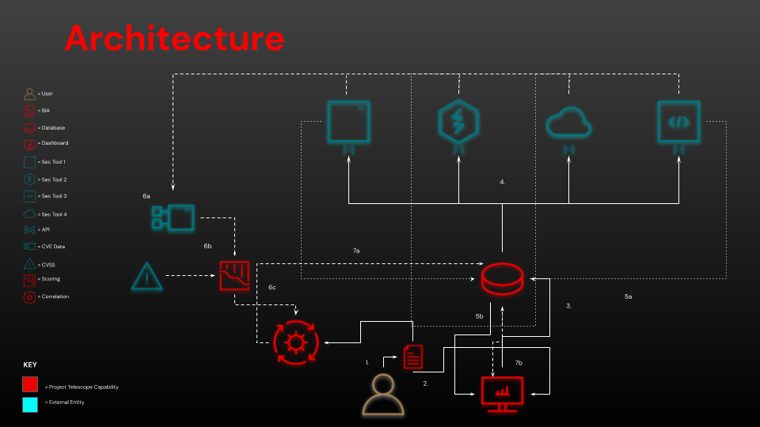

Project Telescope is an open-source initiative which intends to allow organizations that are hosting applications on OpenShift Container Platform to enhance their security governance, risk, and compliance capabilities through a novel implementation of automation, visualization, and metadata consolidation, in a customizable and extensible manner.
Project Telescope was born out of a recurring challenge identified through engagements with various organizations across multiple industry verticals: a growing number of organizations are recognizing the necessity of digitally transforming their business by modernizing their IT landscape and development culture. Simultaneously, these organizations are becoming more aware of the ever-increasing need to secure these digital offerings as cyber attacks are rising in frequency and impact at a terrifying rate.
Increasingly, organizations are finding these two needs - transformative digital adoption and a growing requirement for cyber security - to be diametrically opposed. This is due to a combination of an inability to keep pace with the scale and speed of modern development and a reliance on legacy governance, risk, and compliance processes. These policies include architectural design boards, review committees, and lengthy audits which can stifle innovation. In some organization’s, this is resulting in a development culture whereby products are only achieving security accreditation 50% of the time, and taking an average of nine months to do so. This is simply untenable.
What’s needed is a capability which would do the following:
In order to provide the maximum level of coverage, Project Telescope works like this:

At this point, it may be valuable to explain why we’ve chosen the name Project Telescope. Through a single dashboard, there are varying levels of focus, or “lenses” through which a user can view the capability depending on their persona within the organization:
Project Telescope is less of a cyber security tool, and more a manual process demolisher. The aims of this capability are to provide real time, fully automated cyber security governance, risk, and compliance capabilities across a set of user-defined technical mandates, and enable users to accurately understand their risk landscape and compliance failures.
The ultimate goal is to enable end users to become